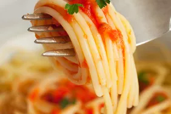

Pasta

Description
This is a renowned recipe known across the globe for its
delicious taste and its easy ay of preparing it.
Ingredients
- Uncooked pasta
- Cooking pot
- Water
- Salt
Steps
- Bring the water to a full, rolling boil
- Add an amount of salt to the water, and add the pasta
- Stir gently
- Cook your pasta at a rapid boil until it is tender but
slightly firm to bite
- Drain the pasta in a colander
- Serve pasta immediately.
Go back to main page
Go to previous page